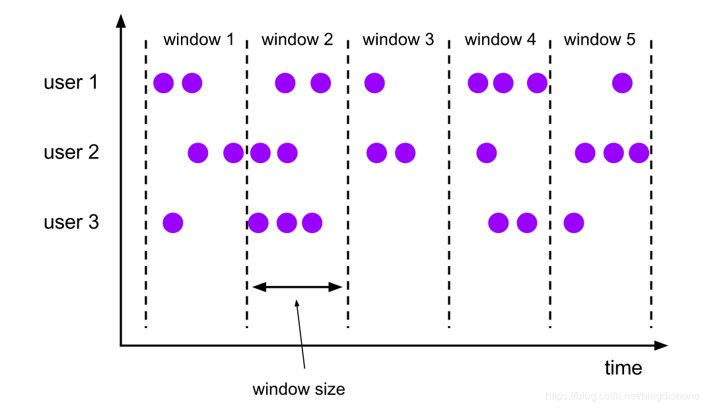
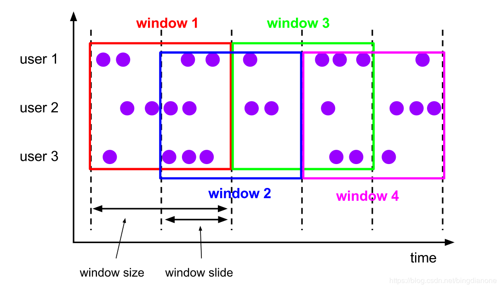
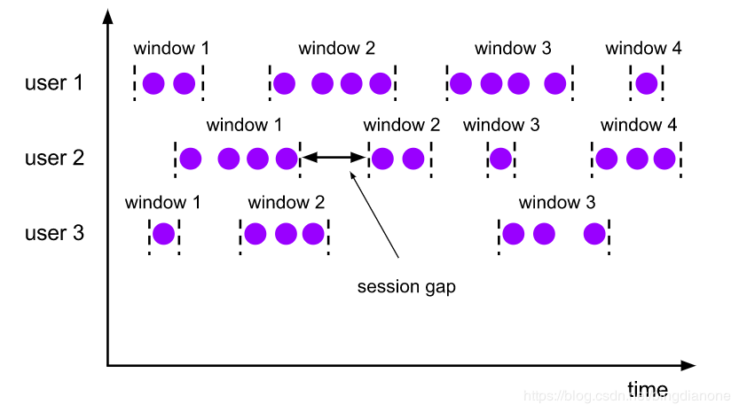
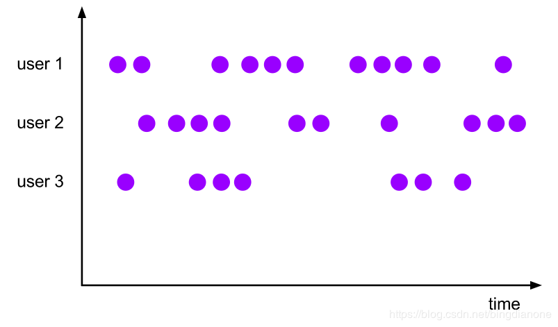

Time
- 事件时间 Event time（最准确）：事件时间是每个事件在其生产设备上发生的时间。
- 应用更广泛，为了避免乱序以及延迟数据，flink引入watermark概念
- 摄取时间 Ingestion time：摄取时间是事件进入Flink的时间。
- 多适用于提供预测的一些结果，相对稳定(只记录一次)
- 处理时间 Processing time（不准确）：处理时间是指正在执行Flink相应操作的机器的系统时间。
- 不稳定(同一数据在流经不同窗口时可能会存在不同的处理时间戳)
不论流处理还是批处理；都建议以事件时间 Event time为基准来计算。
设置时间类型
1 | val env = StreamExecutionEnvironment.getExecutionEnvironment |
Watermark
Flink为处理Event time引入的概念，实际上还是时间戳；
有两种生成机制：Punctuated(间断性)、Periodic(周期性)
当时间达到watermark时，即认为所属限定时间内的数据都到了 - 还会丢失数据
watermark(t):断言所有 <= t的event全部达到
Periodic(周期性)：
按一定时间间隔或者一定数据量生成watermark
生产中[建议]必须结合时间和积累的条数两个维度去生成watermark，否则极端情况
会出现很大的延迟性
ExecutionConfig.setAutoWatermarkInterval(…) 定义watermark产生的时间间隔，单位毫秒Punctuated(间断性)
一般根据event自身决定是否产生watermark，
生产中[只有实时性要求较高/非常高]才会选择该方式生产watermark
AssignerWithPunctuatedWatermarks
预定义：
基于时间升序：Assigners with ascending timestamps
基于延迟数据：Assigners allowing a fixed amount of lateness
https://www.ververica.com/blog/watermarks-in-apache-flink-made-easy
考量点：
1.第一个数据4到来之后，是否直接输出
2.第一个数据2到来之后，是否继续等待？等待多久？还是直接输出
3.如何合理的设定延迟时间(N)
4.使用何种方式生产watermark(bounded-out-of-orderness、ProcessFunction )
如何处理：
常规数据(watermark时间=event时间)：正常处理
延迟数据：窗口[start time, ened time],最大的延迟时间(N)
watermark = ent time + NWindow
一种带key的是键控流，另一种不带key的是非键控流。
编写程序之前要指定的第一件事是您的流是否应该设置key。这必须在定义窗口之前完成。使用keyBy(…)会将您的无限流分割成逻辑键流。如果keyBy(…)未调用，则不会为您的流设置key。
在使用键控流的情况下，传入事件的任何属性都可以用作键（此处有更多详细信息）。拥有键控流将使您的窗口化计算可以由多个任务并行执行，因为每个逻辑键控流都可以独立于其余逻辑流进行处理。引用同一键的所有元素将被发送到同一并行任务。
对于非键控流，您的原始流将不会拆分为多个逻辑流，并且所有窗口逻辑将由单个任务执行，即并行度为1。
Window Assigners 窗口分配器：窗口分配器定义了如何将元素分配给窗口；一个窗口分配器负责将每个传入元素分配给一个或多个窗口。Flink带有针对最常见用例的预定义窗口分配器，即滚动窗口tumbling windows， 滑动窗口sliding windows，会话窗口session windows和全局窗口global windows。您还可以通过扩展WindowAssigner类来实现自定义窗口分配器。所有内置窗口分配器（全局窗口除外）均基于时间将元素分配给窗口，时间可以是处理时间，也可以是事件时间。
滚动窗口tumbling windows
滚动窗口分配器的每个元素分配给指定的窗口的窗口大小。滚动窗口具有固定的大小，并且不重叠。例如，如果您指定大小为5分钟的滚动窗口，则将评估当前窗口，并且每五分钟将启动一个新窗口，如下图所示。

1 | package com.kun.flink.chapter07 |
滑动窗口 Sliding Windows
滑动窗口分配程序将元素分配给固定长度的窗口。类似于滚动窗口分配程序，窗口的大小由窗口大小参数配置。一个附加的窗口滑动参数控制滑动窗口启动的频率。因此，如果滑动窗口比窗口大小小，则滑动窗口可以重叠。在这种情况下，元素被分配给多个窗口。
例如，你可以有10分钟大小的窗口，它可以滑动5分钟。这样，你每5分钟就会得到一个包含最近10分钟内到达的事件的窗口，如下图所示。

1 | package com.kun.flink.chapter07 |
会话窗口 - Session Windows
会话窗口分配程序根据活动会话对元素进行分组。与翻滚窗口和滑动窗口相比，会话窗口没有重叠，也没有固定的开始和结束时间。相反，当某个会话窗口在一段时间内没有接收到元素时，它就会关闭。当一个不活跃的间隙出现时，会话窗口分配程序可以配置为静态会话间隔，也可以配置为会话间隔提取器函数，该函数定义了不活动期间的长度。当此期间过期时，当前会话将关闭，随后的元素将分配给新会话窗口。

由于会话窗口没有固定的开始和结束，它们的计算方法与滚动和滑动窗口不同。在内部，会话窗口操作符为每个到达的记录创建一个新窗口，如果它们之间的距离比定义的间隔更近，则将它们合并在一起。为了能够合并，会话窗口操作符需要合并触发器和合并窗口函数，例如ReduceFunction、AggregateFunction或ProcessWindowFunction (FoldFunction不能合并)。
全局窗口 - Global Windows
全局窗口分配程序将具有相同key的所有元素分配给同一个全局窗口。此窗口模式仅在您还指定自定义触发器时才有用，否则将不执行任何计算，因为全局窗口没有一个可以处理聚合元素的自然末端。
